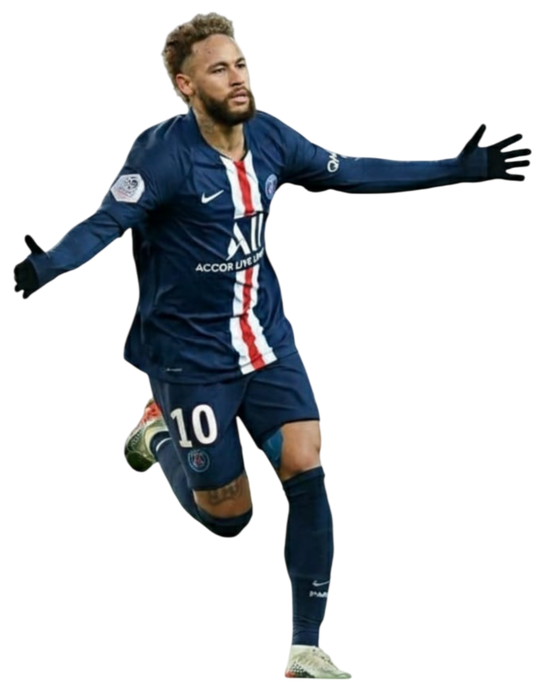

Introdução
Este é o currículo do craque Neymar Jr, apresentado em formato de site como exemplo de desenvolvimento Front-End.

Experiência Profissional
- 2025 - Atual: Santos FC (Brasil)
- 2023 - 2024: Al-Hilal (Arábia Saudita)
- 2017 - 2023: Paris Saint-Germain (PSG, França)
- 2013 - 2017: FC Barcelona (Espanha)
- 2009 - 2013: Santos FC (Brasil)
Seleção Brasileira
Estreou pela Seleção em 2010, somando mais de 120 jogos e 79 gols. Foi campeão da Copa das Confederações em 2013 e conquistou a medalha de ouro nas Olimpíadas de 2016.
Habilidades
- Drible rápido e criativo
- Finalização precisa
- Visão de jogo apurada
- Espírito de liderança